EDH 7916: Contemporary Research in Higher Education
Spring 2022
A course in quantitative research workflow for students in the higher education administration program at the University of Florida
Overview Course information Meeting location Software Schedule Lessons Assignments Questions Past courses About
Data Visualization with ggplot2
One key part of understanding your data and presenting your analyses lies making plots. This lesson will focus on graphics.
R has three major graphing systems: the base system, lattice, and ggplot2. Each system has its benefits and drawbacks. Each is also very versatile with many, many options for creating and adjusting plots.
Unfortunately, there isn’t enough time to go through all three graphing systems. After describing a few base R graphing functions, this lesson will focus on using ggplot2 since it allows users to build plots using the grammar of graphics and integrates well with the tidyverse.
Setup
We’re using two libraries today:
The ggplot2 library is part of the
tidyverse, so we don’t need to load it separately (we can
just use library(tidyverse) as always).
We’re also going to use haven, which
allows us to read in data files from other software such as SPSS, SAS,
and Stata. We’ll use it to read in a Stata (*.dta) version of the
small HSLS data we’ve used before. The Stata version, unlike the plain
CSV version, has labels for the variables and values. These will be
useful when plotting.
Though haven is part of the tidyverse (and should have been installed when you installed tidyverse), we’ll have to explicitly call it.
## ---------------------------
## libraries
## ---------------------------
library(tidyverse)
## ── Attaching packages ─────────────────────────────────────── tidyverse 1.3.1 ──
## ✔ ggplot2 3.3.5 ✔ purrr 0.3.4
## ✔ tibble 3.1.6 ✔ dplyr 1.0.7
## ✔ tidyr 1.1.4 ✔ stringr 1.4.0
## ✔ readr 2.1.1 ✔ forcats 0.5.1
## ── Conflicts ────────────────────────────────────────── tidyverse_conflicts() ──
## ✖ dplyr::filter() masks stats::filter()
## ✖ dplyr::lag() masks stats::lag()
library(haven)
In addition to the Stata version of small HSLS, we’ll also be using
all_schools.csv in the lesson. As in the prior
lesson, unzip the file and place the entire
sch_test subdirectory will all included files in the data
subdirectory (if you don’t already have it). After including its
subdirectory path (tsc_dir), we’ll read in both data files.
Note that since we have two data files this lesson, we’ll give
them unique names instead of the normal df:
df_hs:=hsls_small.dtadf_ts:=all_schools.csv
## ---------------------------
## directory paths
## ---------------------------
## assume we're running this script from the ./scripts subdirectory
dat_dir <- file.path("..", "data")
tsc_dir <- file.path(dat_dir, "sch_test")
## ---------------------------
## input data
## ---------------------------
## assume we're running this script from the ./scripts subdirectory
## read_dta() ==> read in Stata (*.dta) files
## read_csv() ==> read in comma separated value (*.csv) files
df_hs <- read_dta(file.path(dat_dir, "hsls_small.dta"))
df_ts <- read_csv(file.path(tsc_dir, "all_schools.csv"))
## Rows: 24 Columns: 5
## ── Column specification ────────────────────────────────────────────────────────
## Delimiter: ","
## chr (1): school
## dbl (4): year, math, read, science
##
## ℹ Use `spec()` to retrieve the full column specification for this data.
## ℹ Specify the column types or set `show_col_types = FALSE` to quiet this message.
Plots using base R
Even though new graphics libraries have been developed, the base R graphics system remains powerful. The base system is also very easy to use in a pinch. When I want a quick visual of a data distribution that’s just for me, I often use base R.
Note that for the next few plots, I’m not much concerned with how they look. Specifically, the axis labels won’t look very nice. We could spend time learning to make really nice base R plots for publication, but I’d rather we spend that time with ggplot2 graphics.
Also note that we’ll switch to using the base R data frame $
notation to pull out the columns we want. If you need some more
information on using $ notation, check out the supplemental lesson
on data wrangling with base R.
Histogram
For continuous variables, a histogram is a useful plot. Though the
hist() function has many options to adjust how it looks, the
defaults work really well if you just want a quick look at the
distribution.
## histogram of math scores (which should be normal by design)
hist(df_hs$x1txmtscor)

Quick exercise
Check the distribution of the students’ socioeconomic score (SES).
Density
Density plots are also really helpful. R doesn’t have single density plot function, but you can get a density plot in one of two ways, each of which will give a slightly different result.
First, you can adjust the hist() function to add the freq = FALSE
argument. It looks like the first histogram above, but notice that the
y-axis now represents density rather than counts.
## density plot of math scores with hist() function
hist(df_hs$x1txmtscor, freq = FALSE)
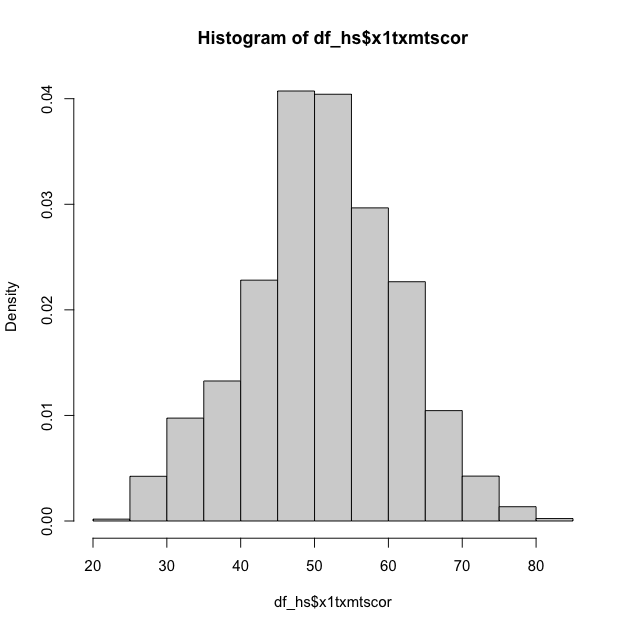
Second, you can plot() the density() of a continuous
variable. Unlike hist(), however, density() doesn’t automatically
ignore missing values, so we have to tell it to remove NAs using the
na.rm = TRUE argument (a common argument for base R functions that’s
useful to remember).
## density plot of math scores
## read inside out: get density value, then plot values
plot(density(df_hs$x1txmtscor, na.rm = TRUE))
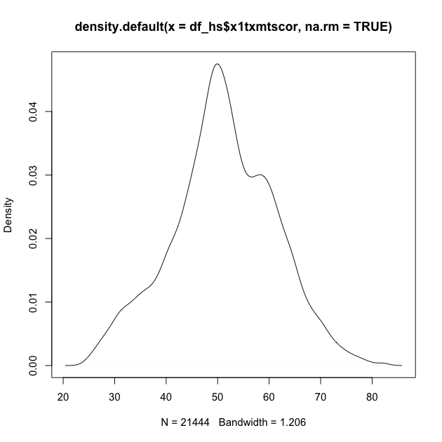
Quick exercise
Plot the density of SES. Next, add the
colargument inplot()to change the color of the line to"red":plot(density(df_hs$x1txtmscor, na.rm = TRUE), col = "red").
Box plot
A box plot will let you see the distribution of a continuous variable at specific values of another discrete variable. For example, test scores ranges at each student expectation level.
Call a box plot using the boxplot() function. This one is a little
trickier because it uses the R
formula construction
to set the continuous variable against the discrete variable. The formula uses a
tilde, ~, and should be constructed like this:
<continuous var> ~ <discrete var>
Notice how we can use the data = df_hs argument instead of adding
df_hs$ in front of the variable names. This saves us some typing.
## box plot of math scores against student expectations
boxplot(x1txmtscor ~ x1stuedexpct, data = df_hs)
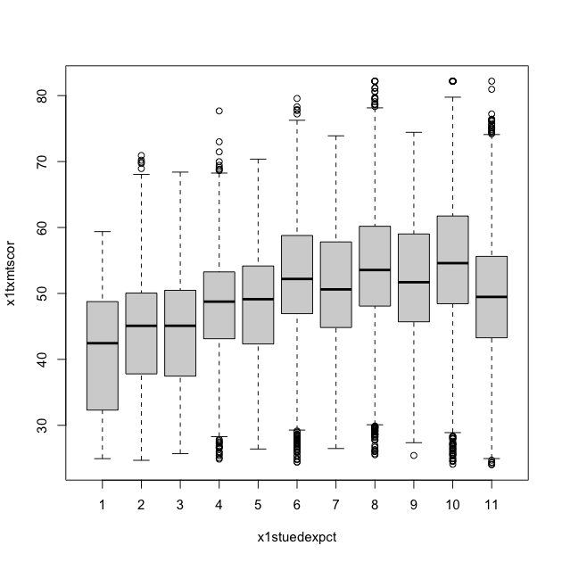
From the boxplot, we can see that math test scores tend to increase as students’ educational expectations increase (remember that 11 means “I don’t know [how far I’ll go in school]”), though there’s quite a bit of overlap in the marginal distributions.
Scatter
Plot two continuous variables against one another using the base
plot() function. There are two primary ways to make a scatter plot
using plot():
plot(x, y)plot(y ~ x)
With both, x is the variable that will go on the x-axis and y the
one that will go on the y-axis. It’s really a matter of which makes
sense to you. We’ll use the first.
## scatter plot of math against SES
plot(df_hs$x1ses, df_hs$x1txmtscor)
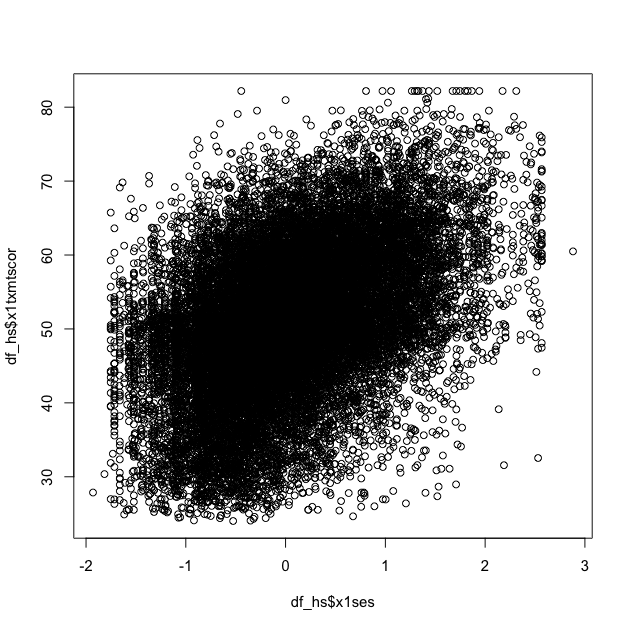
While the data seem to show a positive correlation between socioeconomic status and math test score, there’s also quite a bit of variation in that association (notice that the cloud-like nature of the circles).
Quick exercise
Rerun the above plot, but this time store it in an object,
plot_1. Next, make the same plot, but this time use the second formula construction (~) — store it in an object,plot_2. Visually compare the two, but for a more formal test, useidentical(plot_1, plot_2)on the two plot objects to prove they are the same.
Plots using ggplot2
ggplot2 is my — and many R users’ — primary system for making plots. It is based on the idea of a grammar of graphics. Just as we can use finite rules of a language grammar to construct an endless number of unique sentences, so too can we use a few graphical grammatical rules to make an endless number of unique figures.
The ggplot2 system is too involved to cover in all of its details, but that’s kind of the point of the grammar of graphics: once you see how it’s put together, you can anticipate the commands you need to build your plot.
We’ll start by covering the same plots as above.
Histogram
As the main help site says, all ggplot2 plots need three things:
- [data]: The source of the variables you want to plot
- [aesthetics]: How variables in the data map onto the plot (e.g., what’s on the x-axis? what’s on the y-axis?)
- [geom]: The geometry of the figure or the kind of figure you want to make (e.g., what do you want to do with those data and mappings? A line graph? A box plot?…)
We’ll start by making a histogram again. To help make these pieces
clearer, I’ll use the argument names when possible. The first
function, which initializes the plot is ggplot(). Its first
argument is the data.
The aesthetic mappings, that is, which variables go where or how they
function on the plot, go inside the aes() function. Since we only
have one variable, x1txmtscor, it is assigned to x.
If we assign this first part to an object, p, and print by calling
the object…
## init ggplot
p <- ggplot(data = df_hs, mapping = aes(x = x1txmtscor))
p
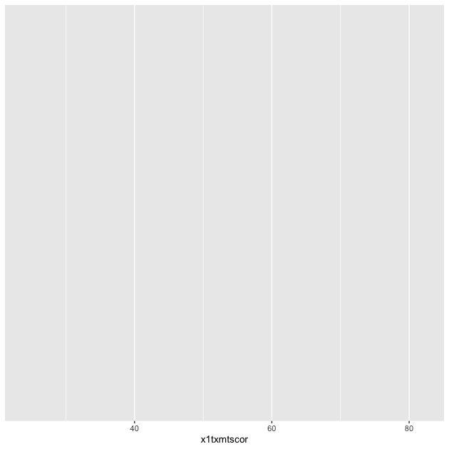
…nothing! Well, not nothing, but no histogram. That’s because the
plot object p knows the data and the key variable mapping but
doesn’t know what do with them. What do we want?
Since we want a histogram, we add the geom_histogram() function to
the existing plot object with a plus sign(+). Once we do that, we’ll
try to print the plot again…
## add histogram instruction (notice we can add pieces using +)
p <- p + geom_histogram()
p

Success!
Let’s repeat it the whole process, but without the middle step:
## create histogram using ggplot
p <- ggplot(data = df_hs, mapping = aes(x = x1txmtscor)) +
geom_histogram()
p
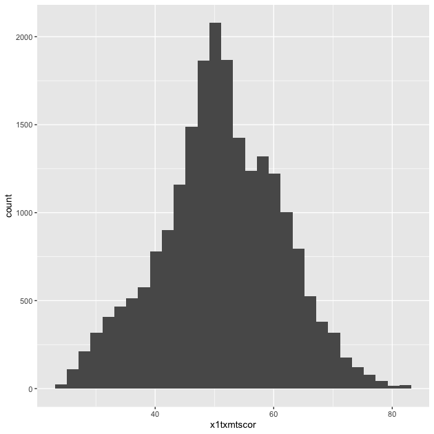
As you can see, the code to make a ggplot2 figure looks a lot like
what we’ve seen with other tidyverse libraries, e.g. dplyr. The key
difference between ggplot2 and dplyr, however, is that while dplyr
uses the pipe (%>%) to connect different functions, ggplot2 uses a
plus sign (+).
It may help you remember the difference:
- dplyr moves output from left to the input in the right and so
needs a pipe (
%>%) - ggplot2 adds layer upon layer to build up the final figure and
so needs a plus sign (
+)
Density
Unlike the base R graphics system, ggplot2 does have a density
plotting command, geom_density(). Instead of building up the figure
piecemeal, we’ll go ahead and chain the geom to the first command and
print.
Notice how the function chain is the mostly the same as above, but (1)
written in a single linked chain and (2) using a different geom_*()
command at the end to indicate that we want something different.
## density
p <- ggplot(data = df_hs, mapping = aes(x = x1txmtscor)) +
geom_density()
p
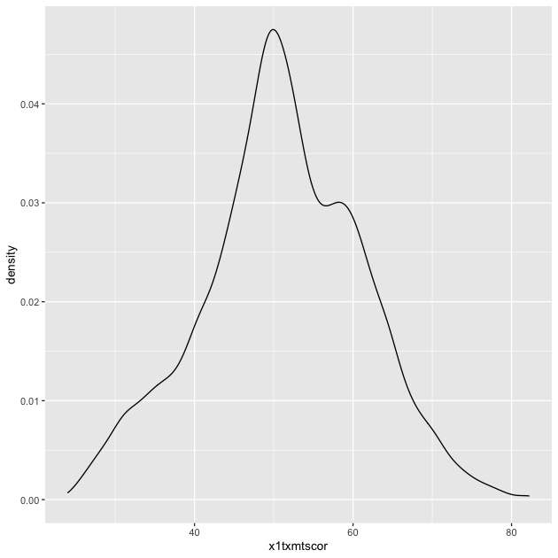
Quick exercise
Make a density plot of SES.
If we want to superimpose the density plot over the histogram, we only need chain the two commands together with a slight modification in how the histogram is made. This way, the histogram and the density will be on the same scale.
The change happens in the geom_histogram() function, where we add a
new mapping: aes(y = ..density..). (NOTE: this is similar to what we
did above in base R to make a histogram on a density scale.)
## histogram with density plot overlapping
p <- ggplot(data = df_hs, mapping = aes(x = x1txmtscor)) +
geom_histogram(mapping = aes(y = ..density..)) +
geom_density()
p
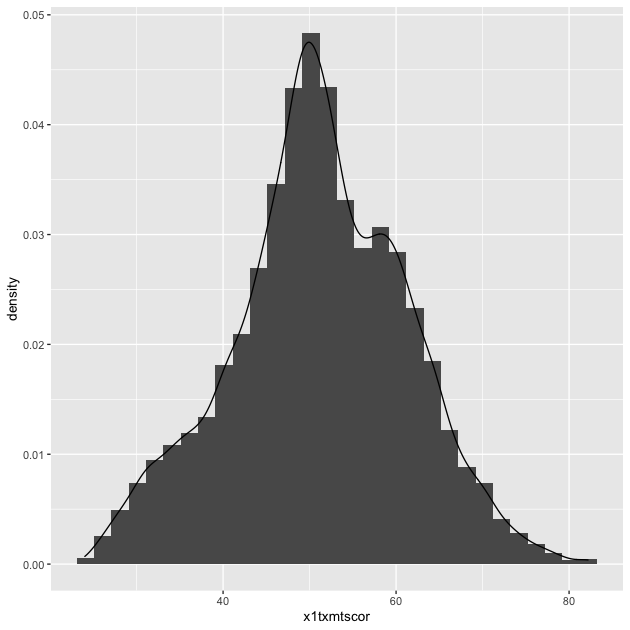
It worked, but it’s not the greatest visual since the colors are the same and the density plot is thin with no fill.
Adding to what came before, the geom_histogram() and
geom_density() both take on new arguments that change the
defaults. Now the resulting plot should look nicer and be easier to
read.
## histogram with density plot overlapping (add color to see better)
p <- ggplot(data = df_hs, mapping = aes(x = x1txmtscor)) +
geom_histogram(mapping = aes(y = ..density..),
color = "black",
fill = "white") +
geom_density(fill = "red", alpha = 0.2)
p

Quick exercise
Try changing some of the arguments in the last plot. What happens when you change
alpha(keep the value between 0 and 1)? What does thecolorargument change? Andfill? What happens if you switch thegeom_*()functions, callgeom_histogram()after you callgeom_density()?
A key thing to note about arguments is that when the are outside
of the aes(), they apply uniformly to the whole geom (e.g. all the
histogram bars are white with a black outline, the density is light
red). When you want some aesthetic of the figure to change as a
function of the data, you need to put it inside aes(). We’ll see
this in the next plot.
Two-way
Plotting the difference in a continuous distribution across groups is a common task. Let’s see the difference between student math scores between students with parents who have any postsecondary degree and those without.
Since we’re using data that was labeled in Stata, we’ll see the
labels when we use count()
## see the counts for each group
df_hs %>% count(x1paredu)
## # A tibble: 7 × 2
## x1paredu n
## <dbl+lbl> <int>
## 1 1 [Less than high school] 1010
## 2 2 [High school diploma or GED] 5909
## 3 3 [Associate's degree] 2549
## 4 4 [Bachelor's degree] 4102
## 5 5 [Master's degree] 2116
## 6 7 [Ph.D/M.D/Law/other high lvl prof degree] 1096
## 7 NA 6721
We can see that all values of x1paredu greater than 2 represent
parents with some college credential. Since we want only two distinct
groups, we can use the operator >= to make a new 0/1 binary
variable. If a value of x1paredu is above 3, then the new indicator
pared_coll will be 1; if not, 0.
NOTE that in the Stata version of hsls_small, all the missing
values, which are normally negative numbers, have already been
properly converted to NA values. That’s why we see a count column
for NA and not labels for missingness that we might have expected
based on prior lessons.
The ggplot() function doesn’t need to use our full data. In fact,
our data needs to be set up a bit differently to make this plot. We’ll
make a new temporary data object that only has the data we need.
## need to set up data
plot_df <- df_hs %>%
## select the columns we need
select(x1paredu, x1txmtscor) %>%
## can't plot NA so will drop
drop_na() %>%
## create new variable that == 1 if parents have any college
mutate(pared_coll = ifelse(x1paredu >= 3, 1, 0)) %>%
## drop (using negative sign) the original variable we don't need now
select(-x1paredu)
## show
head(plot_df)
## # A tibble: 6 × 2
## x1txmtscor pared_coll
## <dbl+lbl> <dbl>
## 1 59.4 1
## 2 47.7 1
## 3 64.2 1
## 4 49.3 1
## 5 62.6 1
## 6 58.1 1
To plot against the two groups we’ve made, we need to add it to the
aesthetic feature, aes(). The math score, x1txmtscor, is still
mapped to x, but since we want two side-by-side histograms, we set
the fill aesthetic to our new indicator variable. So the function
knows that it’s a group (and not just a continuous number with only
two values), we wrap it in the factor() function.
Finally, we add some changes to the geom_histogram() function so that
each group is on the same scale.
## two way histogram
p <- ggplot(data = plot_df,
aes(x = x1txmtscor, fill = factor(pared_coll))) +
geom_histogram(alpha = 0.5, stat = "density", position = "identity")
p
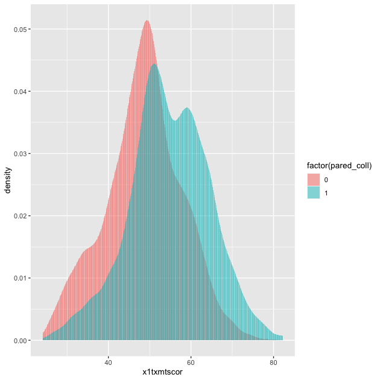
By assigning pared_coll to the fill aesthetic, we can see a
difference in the distribution of math test scores between students
whose parents have at least some college and those whose parents do
not.
Quick exercise
Remove some of the new arguments in
geom_histogram(). How does the resulting plot change? Remove thefactor()function from aroundpared_coll: what happens?
Box plot
By this point, you’re hopefully seeing the pattern in how ggplot2
figures are put together. To make a box plot, we need to add a y
mapping to the aes() in addition to the x mapping. We’ve also
added the same variable to fill as we did to x. We do this so
that in addition to having different box and whisker plots along the
x-axis, each plot is given its own color.
## box plot using both factor() and as_factor()
p <- ggplot(data = df_hs,
mapping = aes(x = factor(x1paredu),
y = x1txmtscor,
fill = as_factor(x1paredu))) +
geom_boxplot()
p
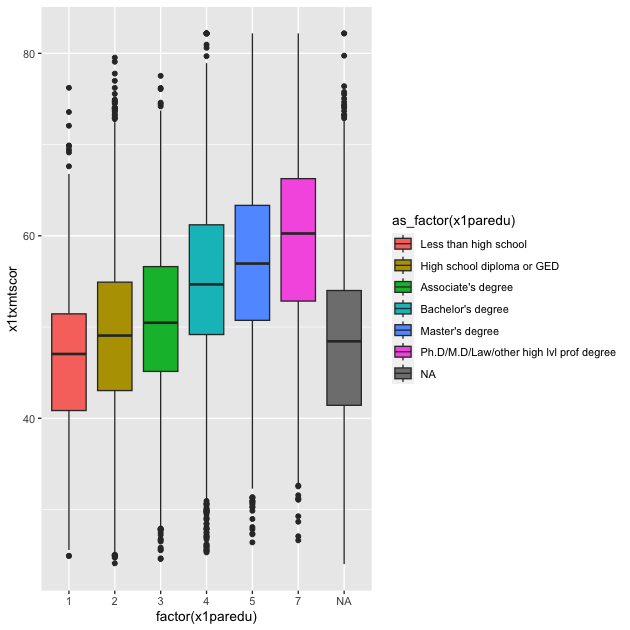
In a way, this plot is similar to the dual histogram above. But since we want to see the distribution of math scores across finer-grained levels of parental education, the box and whisker plot is clearer than trying to overlap seven histograms.
Quick exercise
Change the
as_factor()andfactor()functions above. How does the plot change?
Scatter
To make a scatter plot, make sure that the aes() has mappings for
the x axis and y axis and then use geom_point() to plot. To make
things easier to see (remembering the cloud from the base R plot
above), we’ll reduce the data to 10% of the full sample using
sample_frac() from dplyr. We’ll also limit our 10% to those who
aren’t missing information about student education expectations
## sample 10% to make figure clearer
df_hs_10 <- df_hs %>%
## drop observations with missing values for x1stuedexpct
drop_na(x1stuedexpct) %>%
## sample
sample_frac(0.1)
## scatter
p <- ggplot(data = df_hs_10, mapping = aes(x = x1ses, y = x1txmtscor)) +
geom_point()
p

Now that we have our scatter plot, let’s say that we want to add a third dimension. Specifically, we want to change the color of each point based on whether a student plans to earn a Bachelor’s degree or higher. That means we need a new dummy variable that is 1 for those with BA/BS plans and 0 for others.
We can look at the student base year expectations with count():
## see student base year plans
df_hs %>%
count(x1stuedexpct)
## # A tibble: 12 × 2
## x1stuedexpct n
## <dbl+lbl> <int>
## 1 1 [Less than high school] 93
## 2 2 [High school diploma or GED] 2619
## 3 3 [Start an Associate's degree] 140
## 4 4 [Complete an Associate's degree] 1195
## 5 5 [Start a Bachelor's degree] 115
## 6 6 [Complete a Bachelor's degree] 3505
## 7 7 [Start a Master's degree] 231
## 8 8 [Complete a Master's degree] 4278
## 9 9 [Start Ph.D/M.D/Law/other prof degree] 176
## 10 10 [Complete Ph.D/M.D/Law/other prof degree] 4461
## 11 11 [Don't know] 4631
## 12 NA 2059
We see that x1stuedexpct >= 6 means a student plans to earn a
Bachelor’s degree or higher. But since we need to account for the fact
that 11 means “I don’t know”, we need to make sure our test includes
x1stuedexpct < 11. Remember from a prior lesson that we can connect
these two statements together with the operator &. Let’s create our
new variable.
## create variable for students who plan to graduate from college
df_hs_10 <- df_hs_10 %>%
mutate(plan_col_grad = ifelse(x1stuedexpct >= 6 & x1stuedexpct < 11,
1, # if T: 1
0)) # if F: 0
Now that we have our new variable plan_col_grad, we can add it the
color aesthetic, aes() in geom_point(). Don’t forget to use
factor() so that ggplot knows to treat it like a group!
## scatter
p <- ggplot(data = df_hs_10,
mapping = aes(x = x1ses, y = x1txmtscor)) +
geom_point(mapping = aes(color = factor(plan_col_grad)), alpha = 0.5)
p
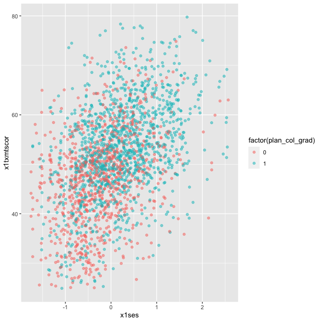
Quick exercise
Change how you make
plan_col_gradso that instead of 1 and 0, you use ‘yes’ and ‘no’. Make your figure again. What changes?
Fitted lines
It’s often helpful to plot fitted lines against a scatter plot to help
see the underlying trend. There are a number of ways to do this with
the geom_smooth() function.
Linear fit
Setting method = lm in geom_smooth() will fit a simple straight
line of best fit with 95% confidence interval shaded around it.
## add fitted line with linear fit
p <- ggplot(data = df_hs_10, mapping = aes(x = x1ses, y = x1txmtscor)) +
geom_point(mapping = aes(color = factor(plan_col_grad)), alpha = 0.5) +
geom_smooth(method = lm)
p
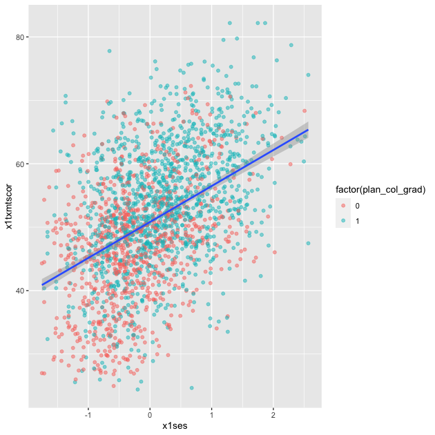
Linear fit with polynomials
In addition to the method, we can add a formula to allow the
fitted line to take a non-linear shape. Using the aes() values of
x and y, the argument below uses an R formula, y ~ x, but with
the addition of the poly() function. Setting the second argument in
poly() to 2 gives the line an extra quadratic term, which allows it
to take a more curved shape.
## add fitted line with polynomial linear fit
p <- ggplot(data = df_hs_10, mapping = aes(x = x1ses, y = x1txmtscor)) +
geom_point(mapping = aes(color = factor(plan_col_grad)), alpha = 0.5) +
geom_smooth(method = lm, formula = y ~ poly(x,2))
p
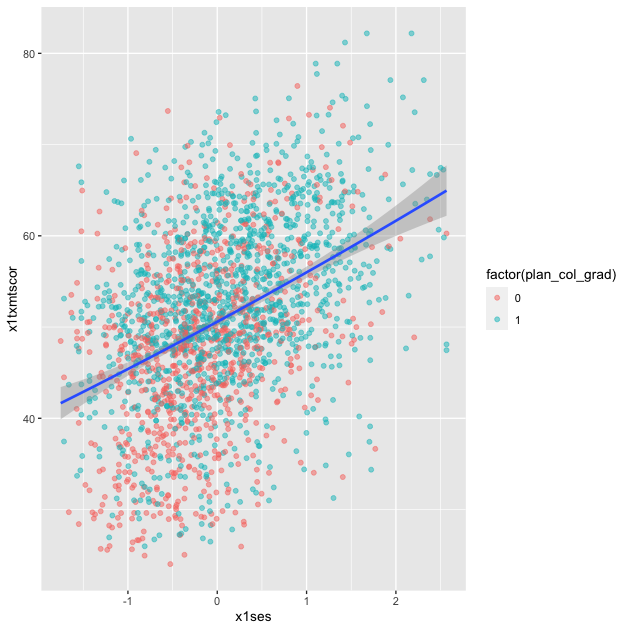
Quick exercise
Change the value in
poly()to higher numbers. How does the line change?
Loess
Finally, we can skip trying to adjust a linear line and just fit a LOESS curve, which is a smooth line produced by fitting a large number of local polynomial regressions on subsets of the data.
## add fitted line with loess
p <- ggplot(data = df_hs_10, mapping = aes(x = x1ses, y = x1txmtscor)) +
geom_point(mapping = aes(color = factor(plan_col_grad)), alpha = 0.5) +
geom_smooth(method = loess)
p
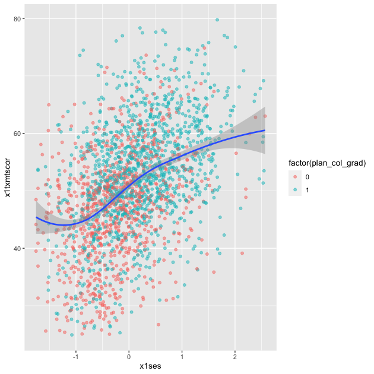
To be clear, these semi-automated lines of best fit should not be used to draw final conclusions about the relationships in your data. You will want to do much more analytic work to make sure any correlations you observe aren’t simply spurious and that fitted lines are telling you something useful. That said, fitted lines via ggplot2 can be useful when first trying to understand your data or to more clearly show observed trends.
Line graph
When you want to show changes in one variable as a function of another
variable, e.g., changes in test scores over time, then a line graph
is often a good choice. Since our hsls_small data is
cross-sectional, we’ll shift to using our school test score
data. Remember that the test score data show three sets of test scores
(math, science, and reading) for four schools over a period of six
years. This data frame is long in year, but wide in test type. It
looks like this:
## show test score data
df_ts
## # A tibble: 24 × 5
## school year math read science
## <chr> <dbl> <dbl> <dbl> <dbl>
## 1 Bend Gate 1980 515 281 808
## 2 Bend Gate 1981 503 312 814
## 3 Bend Gate 1982 514 316 816
## 4 Bend Gate 1983 491 276 793
## 5 Bend Gate 1984 502 310 788
## 6 Bend Gate 1985 488 280 789
## 7 East Heights 1980 501 318 782
## 8 East Heights 1981 487 323 813
## 9 East Heights 1982 496 294 818
## 10 East Heights 1983 497 306 795
## # … with 14 more rows
To keep it simple for our first line plot, we’ll filter our plot data
to keep only scores for one school. Notice how we can do that directly
with pipes inside the ggplot() function. We want to see changes in
test scores over time, so we’ll map year to the x axis and, for
now, math to the y axis. To see a line graph, we add
geom_line().
## line graph
p <- ggplot(data = df_ts %>% filter(school == "Spottsville"),
mapping = aes(x = year, y = math)) +
geom_line()
p

QUICK EXERCISE
Change the school in
filter()to “East Heights” and then “Bend Gate”.
Easy enough, but let’s say that we want to add a third dimension —
to show math scores for each school in the same plot area. To do this,
we can map a third aesthetic to school. Looking at the help file
for
geom_line(),
we see that lines (a version of a path) can take colour, which means
we can change line color based on a variable.
The code below is almost exactly the same as before less two things:
- We don’t filter
df_tsthis time, because we want all schools - We add
colour = schoolinsideaes()
## line graph for math scores at every school over time
p <- ggplot(data = df_ts,
mapping = aes(x = year, y = math, colour = school)) +
geom_line()
p
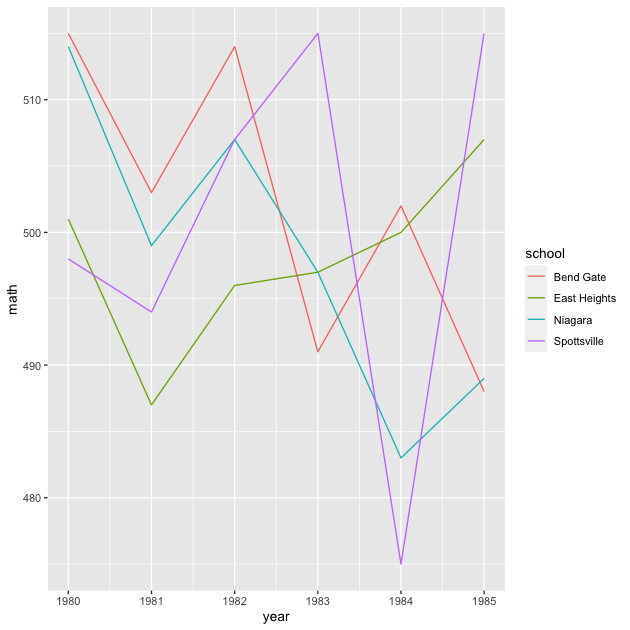
This is nice (though maybe a little messy at the moment) because it allows us to compare math scores across time across schools. But we have two more test types — reading and science — that we would like to include as well. One approach that will let us add yet another dimension is to use facets.
Facets
With facets, we can put multiple plots together, each showing some
subset of the data. For example, instead of plotting changes in math
scores across schools over time on the same plot area (only changing
the color), we can use facet_wrap() to give each school its own
little plot. You might hear me or other refer to plots like this a
showing small multiples or as small multiples figures.
Compared to the code just above, notice how we’ve removed
colour = school from aes() and included facet_wrap(~
school). The tilde (~) works like the tilde in plot(y ~ x) above:
it means “plot against or by X”. In this case, we are plotting math
test scores over time by each school.
## facet line graph
p <- ggplot(data = df_ts,
mapping = aes(x = year, y = math)) +
facet_wrap(~ school) +
geom_line()
p
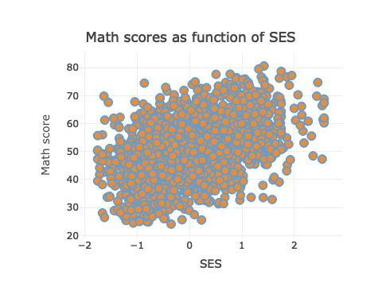
Is this faceted plot better than the color line plot before it? To my eyes, it’s a little clearer, but not so much so that I couldn’t be convinced to use the first one. Whether you use the first or the second would largely depend on your specific data and presentation needs.
Faceting has a clearer advantage, however, when you want to include
the fourth level of comparison: (1) scores across (2) time across (3)
schools from (4) different tests. To make this comparison, we first
need to reshape our data, which is only long in year, to be long in
test, too. As we’ve already seen in a past lesson, we’ll use
pivot_longer() to place each test type in its own column (test)
with the score next to it.
## reshape data long
df_ts_long <- df_ts %>%
pivot_longer(cols = c("math","read","science"), # cols to pivot long
names_to = "test", # where col names go
values_to = "score") # where col values go
## show
df_ts_long
## # A tibble: 72 × 4
## school year test score
## <chr> <dbl> <chr> <dbl>
## 1 Bend Gate 1980 math 515
## 2 Bend Gate 1980 read 281
## 3 Bend Gate 1980 science 808
## 4 Bend Gate 1981 math 503
## 5 Bend Gate 1981 read 312
## 6 Bend Gate 1981 science 814
## 7 Bend Gate 1982 math 514
## 8 Bend Gate 1982 read 316
## 9 Bend Gate 1982 science 816
## 10 Bend Gate 1983 math 491
## # … with 62 more rows
QUICK EXERCISE
If we have 4 schools, 6 years, and 3 tests, how many observations should
df_ts_longhave in total? Does it?
With our reshaped data frame, we now reintroduce colour into the
aes(), this time set to test. We make one other change: y =
score now, since that’s the column for test scores in our reshaped
data. All else is the same.
## facet line graph, with colour = test and ~school
p <- ggplot(data = df_ts_long,
mapping = aes(x = year, y = score, colour = test)) +
facet_wrap(~ school) +
geom_line()
p
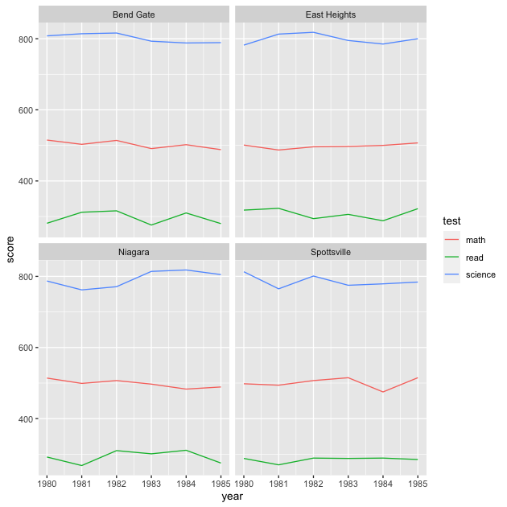
Well, it worked…we can see each school’s different test score trends over time, with each school in its own facet and test scores set to a different color. But the result is a bit underwhelming. Because the different test types are such different scales (even though they are normed within themselves), within-test changes seem rather flat over time.
Let’s try something different: in the next figure, we’ll swap the
variables we give to colour and within facet_wrap(). This means
that each test should have its own facet and each line will represent
a different school.
## facet line graph, now with colour = school and ~test
p <- ggplot(data = df_ts_long,
mapping = aes(x = year, y = score, colour = school)) +
facet_wrap(~ test) +
geom_line()
p
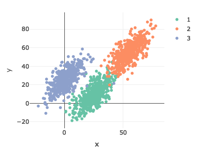
Okay. New problem. While it’s maybe a little easier to see same-test differences across schools over time, the different scales of the tests still make the figure less useful than we might hope. It’s not that the students are way better at science than reading; it’s just that the tests are scaled differently. Someone quickly reading this figure, however, might make that incorrect interpretation.
One thing we can do is change the y-axis for each facet. The default is
to keep the y-axis scale the same. By adding scales = "free_y" to
facet_wrap(), we’ll let each test have its own y-axis scale.
Having different axis scales side-by-side can be confusing, however
(this is why the default is to keep them the same). To mitigate that
confusion, we’ll also rearrange the facets so they stack rather than
sit side by side. To do this, we’ll add ncol = 1 to
facet_wrap(). This says our facets have to stick to one column,
effectively meaning they will stack vertically.
## facet line graph, with one column so they stack
p <- ggplot(data = df_ts_long,
mapping = aes(x = year, y = score, colour = school)) +
facet_wrap(~ test, ncol = 1, scales = "free_y") +
geom_line()
p
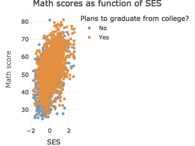
That looks better! But we can do even better than that…
Currently, each test score is on its own normed scale. While our new figure allows us to make comparisons across schools over time within test, it’s more difficult to make a good comparison between tests. For example, East Heights has a little over 20 point drop in reading scores from 1981 to 1982 and about the same drop in science scores from 1982 to 1983. How should we think about these drops? Are they about the same or is one drop relatively bigger than the other?
To better answer this question, we could re-standardize each test
score so that it is centered at 0 and a one unit change is equal to 1
standard deviation difference in score. We’ll use mutate() to create
a new variable score_std. Because we group_by() test,
score_std will be standardized within test.
## rescale test scores
df_ts_long <- df_ts_long %>%
group_by(test) %>%
mutate(score_std = (score - mean(score)) / sd(score)) %>%
ungroup
We’ll repeat the same code as before, but this time substitute y =
score_std. Because all tests are on the same standardized scale, we
can also drop scales = "free_y".
## facet line graph with standardized test scores
p <- ggplot(data = df_ts_long,
mapping = aes(x = year, y = score_std, colour = school)) +
facet_wrap(~ test, ncol = 1) +
geom_line()
p
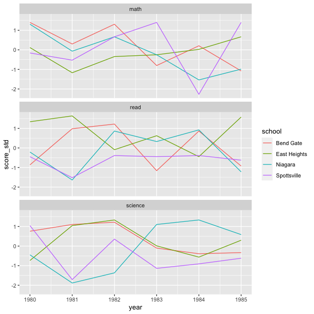
Notice the lines look the same relative to one another, but now we have a consistent scale to help judge changes. To answer our question from before, it seems that the drop in reading scores (1981 to 1982) and science scores (1982 to 1983) were each about 1.5 standard deviations. We could test more formally, but we have a clearer idea now that all tests are on the same scale.
QUICK EXERCISE
What happens if you use the argument
scales = "free_y"in the last bit of code? Why might you not use that once we’ve scaled the test scores?
As a quick change, we can go back to having each school in its own facet and test scores within.
## facet line graph
p <- ggplot(data = df_ts_long,
mapping = aes(x = year, y = score_std, colour = test)) +
facet_wrap(~ school) +
geom_line()
p
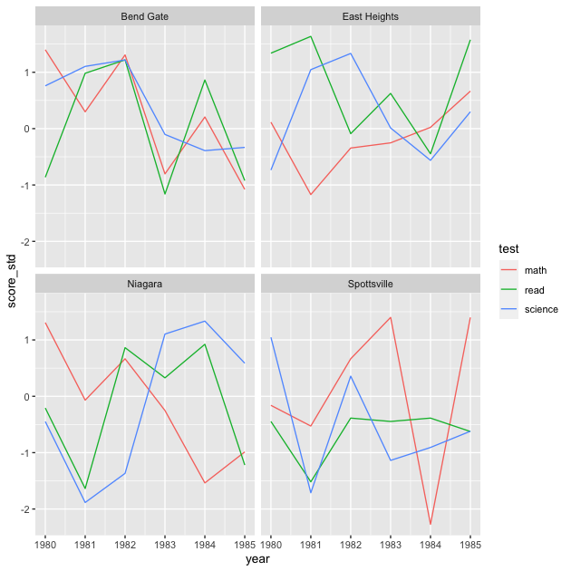
QUICK EXERCISE
Why did we drop
ncol = 1fromfacet_wrap()? What happens if you keep it?
Our plot is looking better, but it still may not contain the information we want. We’ve standardized the test scores over this time window, but maybe what we really want to know is how they’ve changed relative to the beginning of the sample period. You can imagine a superintendent who took over in 1981 would be keen to know how scores have changed during their tenure.
This means that while we still want to standardize the scores, we
should zero them not at the overall mean, but at the value in the first
year. We can do that by grouping by school and test, arranging in
year order, making a new variable that is the first() score (within
test, within school) and using that rather than the mean test score to
make our new variable, score_std_sch.
## standardize test scores within school to first year
df_ts_long <- df_ts_long %>%
group_by(test, school) %>%
arrange(year) %>%
mutate(score_year_one = first(score),
## note that we're using score_year_one instead of mean(score)
score_std_sch = (score - score_year_one) / sd(score)) %>%
ungroup
Now we’ll plot using our new variable score_std_sch.
## facet line graph
p <- ggplot(data = df_ts_long,
mapping = aes(x = year, y = score_std_sch, colour = test)) +
facet_wrap(~ school) +
geom_line()
p
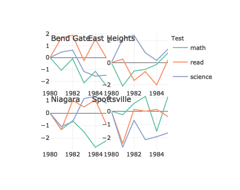
With this final graph, we can see relative changes across schools, across times, across tests. Notice that line shapes within each facet are the same as before, just shifted up or down so that the first value for each test in 1981 is 0.
Is this the best version of this figure (minus making the axis and legend labels look nicer)? Again, it depends on what you want to show. Remember that figures don’t speak for themselves: it’s up to you to explain to your reader (include your future self) what they mean. That said, a well crafted figure will make that job much easier.